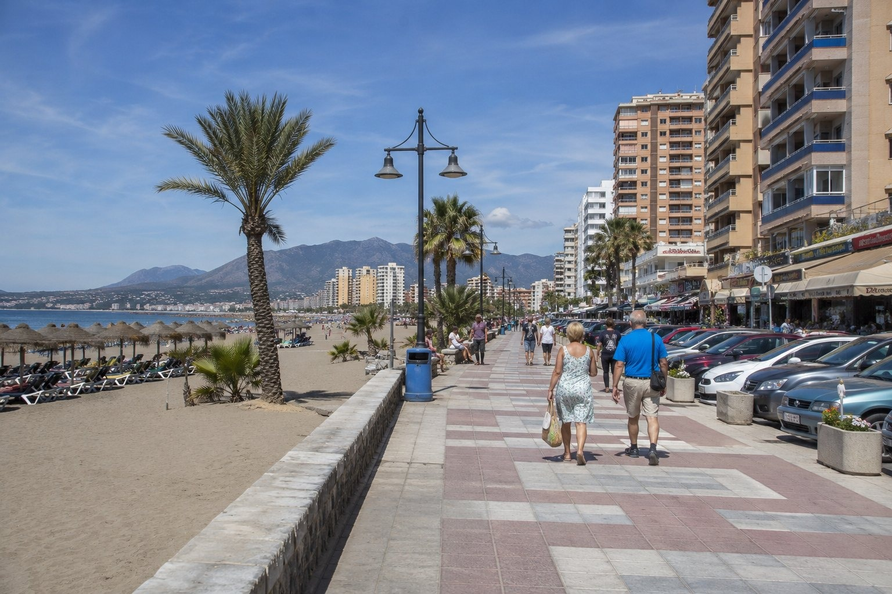

1
Redo för publicering
Hög prio · 170
Strand
torremolinos
Málaga
bilder/web-ready/torremolinos/malaga-torremolinos.jpg
bilder/web-ready/torremolinos/redo/malaga-torremolinos.jpg
Prompt
Publishing metadata
- Prioritet
- Hög (170) · bas 10 | startsida +130 | 15 träffar i sidtext +30
- Alt
- Málaga i Torremolinos med människor och realistisk resemiljö
- Caption
- Málaga i Torremolinos
- SEO
- En realistisk resebild från Málaga i Torremolinos. Bilden visar Málaga i Torremolinos under relevant resesäsong med naturligt folkliv och tydliga platsdetaljer som gör reseguideavsnittet mer visuellt trovärdigt.
- Target
- https://torremolinos.se/ / malaga